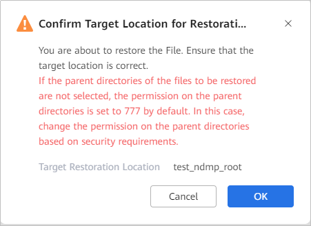

This section describes how to restore specified files in a NAS file system that has been backed up to their original location, new locations, or local locations.
Context
- The product supports file-level restoration using backup copies.
Precautions
If a folder or file name contains garbled characters, file-level restoration is not supported. Do not select folders or files of this type. Otherwise, file-level restoration fails.
Prerequisites
- File-level restoration is supported only when the index status of a copy is Indexed.
- If Automatic Indexing is enabled for the copy, the index status of the copy is Indexed. In this case, you can directly perform file-level restoration. If the Automatic Indexing is not enabled, click Manually Create Index and then perform file-level restoration.
- To restore an NDMP NAS file system to a new location, a storage device residing at the new location needs to be added to the product. For details about how to add a storage device, see Step 1: Adding a Storage Device.
Procedure
- Choose Explore > Copy Data > File Systems > NAS File Systems
- Copies can be searched by NDMP NAS file system resource or copy. This section uses the NDMP NAS file system resource as an example.
On the Resources tab page, locate the NDMP NAS file system to be restored by file system name and click the name.
- On the Copy Data page, select the year, month, and day in sequence to locate the copy.
If
 is displayed below a month or day, a copy is generated in the month or day.
is displayed below a month or day, a copy is generated in the month or day. - Locate the copy for restoration and click More > File-level Restoration on the right of the row where the copy is located.
- Select the object to be restored and the restoration target location.
The restoration target location can be Original location or New location.
- Original location: Restores data to the original file system.
- New location: Restores data to a file system of another device or another file system of the original device.
For details about the parameters of the original location, see Table 1. For details about the parameters of a new location, see Table 2.
Table 1 Parameters for restoring data to the original location Parameter
Description
Location
Location of a file system, which cannot be modified.
Table 2 Parameters for restoring data to a new location Parameter
Description
Storage Device
Select the storage device that resides at a new location.
File Systems
Select the file system to be restored.
FQDN/IP
FQDN name or service IP address for accessing a NAS share.
The FQDN format is Name of the storage device where a NAS share resides.Name of the domain to which the storage device is added. For example, if the name of the storage device where a NAS share resides is Huawei.Storage and the name of the domain to which the storage device is added is huawei.com, the FQDN is Huawei.Storage.huawei.com.
NOTE:If you need to enter an FQDN, configure the DNS service on the management page of the product so that the product can access external domain names. For details about how to configure the DNS service, see Configuring the DNS Service.
Overwrite Rule
Replace existing files.
NOTE:If you do not select the parent directory and select only child content when selecting a copy, the permission on the parent directory is set to 777 by default after the restoration. Change the permission on the parent directory based on security requirements.
- Set parameters under Select Target Restoration Location and click OK.
- Click OK.
